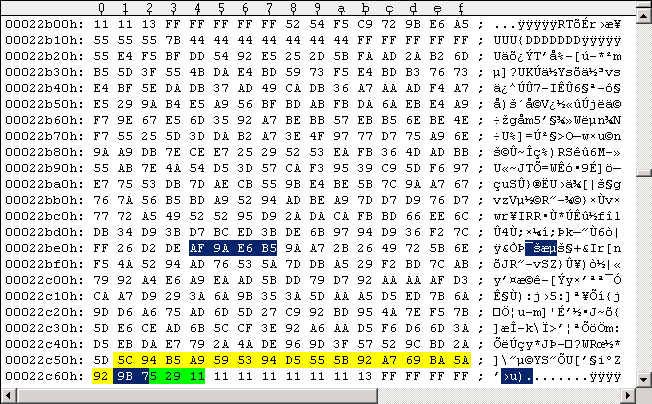
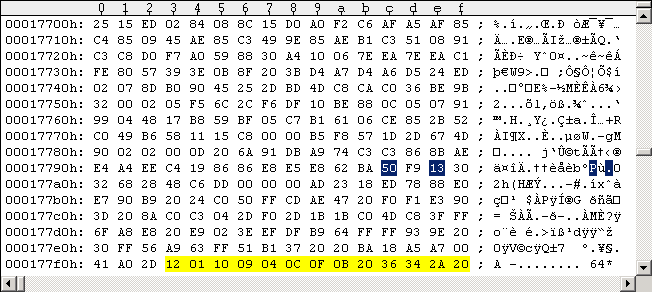

Main Index Routine Index Memory IndexRapidLok5 notes
RapidLok5 is very similar to RapidLok6, so I keep this article short. The most important difference is an additional track alignment situation in RapidLok5 that needs an additional patch. I divided this into four parts: PART I: Differences between RapidLok 5 and 6 PART II: Patches for RapidLok5 PART III: Changing the TV standard: PAL <-> NTSC PART IV: Software titles with RapidLok5PART I: Differences between RapidLok 5 and 6
Here are the 1541 drive code differences between the RapidLok versions 5 and 6. I compared my original (unmodified) RapidLok6 Pirates G64 image (PAL) with all game titles listed below under "Software titles with RapidLok5". v6 v5 0208: 36 52 041E: 4C 2A 043A: DA DE 0745: A5 C9 0746: 0A 6B 0747: 30 F0 0748: 2D 34 074F: 26 2B 075A: 22 20 0782: F3 F8 The difference in the [$02xx] code area applies to the $0206 routine ("M-W" command body), the [$04xx] differences apply to the $0415 routine and the [$07xx] differences apply to the $0745 routine. $0206 routine differences The $0206 routine is the remainder of the "M-W" memory command, cached in the 1541 [$0200-$0229] "Buffer for command string", that copied $15 data bytes to [$B5-$C9] ([$B5-$C5] are set to zero at $0313, but [$C6-$C9] are kept as parameters. See following code snippet (differences are marked red/green): --- $0206 routine code snippet -------------------------------------------------------------------------- Jump from $07FD: 0206: 58 CLI ; enable Interrupts for executing Job #4 (read Sector 3 to [$07xx]) RL5: 0207: 49 52 EOR #$52 ; XOR with parity of last read data buffer (Sector 15), should be $51 RL6: 0207: 49 36 EOR #$36 ; XOR with parity of last read data buffer (Sector 15), should be $35 0209: 85 06 STA $06 ; [$06]:=$03, so [$05/$06] points to $0300 Jump from $0213: 020B: B1 05 LDA ($05),Y 020D: 59 17 04 EOR $0417,Y 0210: 91 05 STA ($05),Y ; decryption, [$0300-$0380]:= [$0300-$0380] xor [$0417-$0497] 0212: 88 DEY 0213: 10 F6 BPL $020B 0215: 6C 05 00 JMP ($0005) ; jump to $0300 (see above $0209 statement) --------------------------------------------------------------------------------------------------------- This means Track 18 Sectors 18 (startup) and 15 (encrypted $03xx buffer) have a different sector parity than the RapidLok6 ones. The $0206 startup routine decrypts the code area [$0300-$0380] against [$0417-$0497]. In particular [$0307] is xor'ed against [$041E], and [$0323] is xor'ed against [$043A]. As [$041E],[$043A] are known to be different in RapidLok5, there must be 2 bytes different in the encrypted $03xx buffer, so the decrypted $0300 routine remains the same. $0415 routine differences We take a closer look at the $0415 routine here. The major difference to RapidLok6 is the additional track alignment situation. "Hardball" e.g. has this enforced when the last file on the disk is accessed on Track 16 (you can test this out withLOAD"19",8,1). Track 16 has the usual RapidLok Track header, followed by the usual $6B data sectors and usual $55 empty sectors. Look at the code snippet below: The routine searches for a (specific) $6B data sector and if it encounters a $55 empty sector (or the Track header), the $0439-BNE branches to $0419, implicating the $041D-JSR to the $052A-routine ("Find DOS reference sector on track", integrity checks and possibly head recalibration onto track). Thus the search restarts at the beginning of Track 16 (right after the Track header). Now, if the requested specific $6B data sector is not found before a $55 empty sector is encountered again, we're in a dead-lock (error abort when [$E7] decreases to zero - black screen). Here is a short overview of the differences in the $0415 routine: --- $0415 routine code snippet ----------------------------------------------------------------------------- Jump from $0439, $047B, $0487: 0415: C6 BE DEC $BE ; decrease trial count (initialized below at $0422: [$BE]:=$24) 0417: 10 0D BPL $0426 Jump from $042D, $0439: 0419: C6 E7 DEC $E7 ; initial value 9 -- irrelevant as [$C6] gives max 4 times 041B: 30 E3 BMI $0400 ; if no tries left ($BE/$E7): branch to exit of RapidLok - Avoid this!!! RL5: 041D: 20 2A 05 JSR $052A ; Find DOS reference sector on current Track (integrity check). RL6: 041D: 20 4C 05 JSR $054C ; Recalibrate head onto Track and find DOS reference sector (integrity check) 0420: B0 DE BCS $0400 ; if no tries left ([$C6]): branch to exit of RapidLok - Avoid this!!! JSR from $05A4: 0422: A9 24 LDA #$24 0424: 85 BE STA $BE ; $24 tries to find a $6B data sector Jump from $0417: 0426: A5 16 LDA $16 ; [$16]=4 0428: 85 31 STA $31 ; hi address for file transfer in $0625 routine (always $04xx) 042A: 20 78 06 JSR $0678 ; wait for next $6B data sector Sync mark. CF:=0 if found. / Set [$15]. 042D: B0 EA BCS $0419 ; branch if not found 042F: A4 17 LDY $17 ; [$17]=$7E lo-address where data sector is written to 0431: A9 6B LDA #$6B ; data sector ID 0433: 50 FE BVC $0433 ; wait for byte-ready 0435: B8 CLV 0436: 4D 01 1C EOR $1C01 ; [$1C01]=$6B if data sector really found ($6B xor $6B = 0) RL5: 0439: D0 DE BNE $0419 ; branch if not found RL6: 0439: D0 DA BNE $0415 ; branch if not found Jump from $046B, $0477: 043B: 50 FE BVC $043B ; wait for byte-ready 043D: B8 CLV 043E: AD 01 1C LDA $1C01 ; read data-byte from head ------------------------------------------------------------------------------------------------------------ Because of the code differences, the codesegment checksum is different in a $0415 routine addon: --- $0415 routine addon snippet: codesegment checksum ------------------------------------------- 0489: 79 00 04 ADC $0400,Y ; Codesegment-Checksum! 048C: 88 DEY ; adds every second byte in range 048D: 88 DEY ; [$0402-$047C,$0500-$07FE] (odd addresses skipped) 048E: D0 F9 BNE $0489 ; ; 0490: EE 8B 04 INC $048B ; increases $0489-buffer-address: $0400, $0500, ... , ($0800) 0493: C6 31 DEC $31 ; hi address for file transfer in $0625 routine 0495: 10 F2 BPL $0489 ; RL5: 0497: E9 2E SBC #$2E ; Checksum must be #$2E+1 RL6: 0497: E9 E0 SBC #$E0 ; Checksum must be #$E0+1 0499: D0 04 BNE $049F ; so branch is not taken! ------------------------------------------------------------------------------------------------- 049F: 0E 40 04 ASL $0440 ; kills the head read command at $043E. Avoid this!!! ------------------------------------------------------------------------------------------------- $0745 routine differences The differences in the $0745 routine ("enforce track alignment, set Job #1, set [$1D], set [$11], get Track Key") have consequences for the track alignment (if called at $0745 from the $0678 routine). I will not go into a detailed analysis and simply list the routine's code (RapidLok6 version) with the differences marked in colors, as the routine will be completely disabled by the patches below. --- $0745 routine code snippet ----------------------------------------------------------------------------- Purpose: Enforce track alignment, set Job #1, set [$1D], set [$11], get Track Key. If call to $0745: Measures sector length and following Sync length for track alignment. Set Job #1 to execute, set [$1D], set [$11], get Key for current Track. The track alignment is disabled for the very first $6B data sector of the file to be loaded ([$0A]-flag). Called with Y=0. If call to $075D: Set [$1D], set [$11], get Key for current Track. If jump to $0764: Set [$11], get Key for current Track. If jump to $0769: Get Key for current Track. JSR from $068E: RL5: 0745: C9 6B CMP #$6B RL5: 0747: F0 34 BEQ $077D RL6: 0745: A5 0A LDA $0A ; disable track alignment for first $6B data sector to be loaded by $0422 routine RL6: 0747: 30 2D BMI $0776 0749: 20 26 07 JSR $0726 ; Counts the data bytes (returned in A,Y) until next Sync is detected. CF:=1. 074C: C0 18 CPY #$18 ; compare number of data bytes with $18 RL5: 074E: 90 2B BCC $077B ; branch if <$18 (only length of $52 DOS reference header is <$18 here) RL6: 074E: 90 26 BCC $0776 ; branch if <$18 (only length of $52 DOS reference header is <$18 here) 0750: A2 D0 LDX #$D0 0752: 86 01 STX $01 ; set Job #1 to $D0 (execute $0400) again 0754: 20 3F 07 JSR $073F ; measure length of next following Sync mark (in X) 0757: E0 2A CPX #$2A ; compare Sync length with $2A RL5: 0759: 90 20 BCC $077B ; branch if <$2A RL6: 0759: 90 22 BCC $077D ; branch if <$2A 075B: 86 11 STX $11 ; [$11]:= Sync length JSR from $058C: 075D: AD 50 01 LDA $0150 ; Synchronization value (Track-to-Track / Track 36) 0760: 85 1D STA $1D ; [$1D]:= [$0150] 0762: A5 11 LDA $11 Jump from $0555: 0764: 38 SEC 0765: E5 1D SBC $1D 0767: 85 11 STA $11 ; [$11]:= A - [$1D] Jump from $06F0: 0769: A6 22 LDX $22 ; [$22] = current track number 076B: E0 13 CPX #$13 076D: 90 02 BCC $0771 076F: CA DEX 0770: CA DEX Jump from $076D: 0771: BD 52 01 LDA $0152,X ; get Key for current Track (read from Track 36 Key Sector) 0774: 85 0E STA $0E ; [$0E]:= Key (~number of $7Bs in extra sector) Jump from $0747, $074E, $0781: 0776: A9 EE LDA #$EE ; $EE=11101110b 0778: 8D 0C 1C STA $1C0C ; init PCR, switch to reading Jump from $074E, $0759, $0781: 077B: 18 CLC 077C: 60 RTS Jump from $0747, $0759: 077D: 66 12 ROR $12 ; track alignment error: [$12]/2 (MSB:=CF=0) 077F: C6 D4 DEC $D4 ; track alignment error: [$D4]-1 RL5: 0781: 10 F8 BPL $077B RL6: 0781: 10 F3 BPL $0776 Jump from $0713: 0783: 4C D5 07 JMP $07D5 ; error: branch to exit of RapidLok - Avoid this!!! ------------------------------------------------------------------------------------------------------------PART II: Patches for RapidLok5
As RapidLok versions 5, 6 and 7 are similar, I combined the patches for the different versions. See RapidLok6 patches. Yes, the patches work for RapidLok versions 5, 6 and 7, even if there are differences in the code and the sector parity. You only have to make sure the marked bytes in the figures are exactly the same before you edit them.PART III: Changing the TV standard: PAL <-> NTSC
RapidLok disks come around with predefined TV standard, you can't run them on a C64 with a different TV standard. I show you here how you can simply switch between the TV standards if you have a "wrong" disk. But please don't edit your original disks - change the TV standard only on remastered disks or in your G64 images! There is no problem for WinVice - you can set the correct TV standard in WinVice (Options - Video standard)! Notice: A game may have further PAL/NTSC checks inside its game code or none at all, thus relying on the TV standard "enforced" by RapidLok. They may not work with the "wrong" hardware or may have some sort of screen flicker! We make only sure here that RapidLok works with the chosen TV standard. The following Figure #1 shows Track 18 Sector 18 of a RapidLok5 PAL disk and Figure #2 that of the NTSC version. The changes are the same as for RapidLok6, so no explanations here. Notice 1: The green marked bytes are GCR-encoded off-bytes at the end of every DOS sector - they may be different on your disk (no problem - they are unused): a standard DOS data sector consists of 1 byte block ID ($07), 256 data bytes and 1 byte checksum, making 258*5/4=322.5 encoded data bytes on disk after the Sync mark; adding the usual 2 off-bytes due to GCR alignment (usually zeros) make 260*5/4=325, hence (325-322.5)=2.5 green marked bytes. Remember the factor 5/4 comes from the GCR encoding on disk: 4 memory bytes are converted to 5 GCR bytes on disk (the "GCR alignment"). The following bytes before the next Sync mark are (random) off-bytes as well. Notice 2: The yellow marked bytes are known to be possibly different on RapidLok5 disks, they're some sort of unused off-bytes. There are up to 13 bytes different in D64 images: the yellow marked last 13 of the 256 data bytes in the sector (see Figures #3 and #4 below). This corresponds to (257-13)*5/4=305 "identical" data bytes in the associated G64 images, counted from the beginning of the sector (ok, the marked PAL/NTSC bytes in the middle are different); directly following in the G64 images are the yellow marked 13*5/4=16,25 different bytes (2 bits overlapping to marked checksum). The 2 overlapping bits from the 257 GCR encoded data bytes may lead to a different first byte in the blue marked sector checksum in Figures #1 and #2 below (the "9" at offset $22C61 there), which is no problem - simply apply the blue marked changes. Important: If your yellow marked bytes are different, you must use the ones in the figures! If you encounter more differences, don't apply this TV standard fix - or fix the sector parity yourself! Changing the TV standard:
The following Figure #1 shows a PAL G64 disk image and Figure #2 shows a NTSC G64 disk image. You have to change the blue marked bytes. If the yellow marked bytes are different in your own disk images, you must use the ones in the figures! The green marked bytes are unused.
Figure #1: Original Track 18 Sector 18 of RapidLok5 PAL disk, G64 image.
Figure #2: Track 18 Sector 18 of RapidLok5 NTSC disk, G64 image.The following Figures #3 and #4 show how the changes are applied to D64 images. You should not need this, but I show it here how this is done:

Figure #3: Original Track 18 Sector 18 of RapidLok5 PAL, D64 image.
Figure #4: Track 18 Sector 18 of RapidLok5 NTSC, D64 image.PART IV: Software titles with RapidLok5
The following games are known to be protected with RapidLok5. This list may not be complete. Keep in mind that even if a title is listed below this does not necessarily mean all versions of it are protected with RapidLok5: There may exist versions that may have a different RapidLok version, a non-RapidLok protection, or even no protection at all. Game Company TV type ------------------------------------------ Ace of Aces Accolade NTSC Deceptor Avantage NTSC Desert Fox Avantage NTSC Gunship Microprose NTSC Hardball Accolade NTSC Killed until dead Accolade NTSC PSI-5 Trading Co Accolade NTSC There are versions of Ace of Aces, Deceptor, Desert Fox, and Killed until dead without RapidLok. The text on a "Deceptor" box says: "Published and distributed by Avantage Software from Accolade Inc., Cupertino, CA". So Avantage seems to be in some relation with Accolade here. There are PSI-5 Trading Co versions with RL1 (disk id "F1") and RL2 (disk id "F2") (both PAL). PSI-5 Trading Co RL5 (NTSC) has disk id "F4", which likely also indicates that it contains a later version of the game (see statements below). The "Psi-5 Trading Company" booklet has interesting statements from Accolade concerning different versions of RapidLok ("fast-loader", "protection software") and the game itself ( http://www.cerebus.de/psi5/words/docu/booklet.html#newTips ): DISK LOADING PROBLEMS (Commodore 64/128 users) BRAND OF DISK DRIVE: At present, Accolade's C64 product line only supports Commodore disk drives (i.e. 1541 & 1571). We cannot guarantee compatibility with other brands. We have a built-in "fast-loader" that can load programs over 10 times faster than a normal 1541 load. This, along with protection software, requires the internals of the disk drive to be very close to what a Commodore disk drive looks like. RANDOM BOOT PROBLEMS: We have found that a variety of problems can be caused by equipment being attached to your C64. We therefore recommend that all peripherals and cartridges (particularly "fast loaders") be removed from your C64 computer (except disk drive 8 joystick) prior to running any Accolade game. People are surprised to find out that just turning the power off to these devices is not enough. Accolade software utilizes all 64K of RAM in the system and uses memory configurations that differ from other game software. This tends to upset modems and printers and the like. DRIVE ALIGNMENT PROBLEMS: We have found out that our original "fast-loader" and protection system required 1541 and 1571 disk drive alignment to be in close adjustment. A weakness in Commodore's 1541 disk drive design (along with the fact that other companies' older protection schemes involved the stepper motor banging itself against the track zero stop) causes many disk drives to become out of alignment. Both Commodore and other companies have wised up, but it still leaves a lot of disk drives partially out of alignment. We have therefore improved our "fast-loader" software to be more forgiving. In the case of Psi-5, you can determine if you have the earlier loader by doing a diskette directory of the label side. If the volume-id is "F1" it is the early, less forgiving loader. You may purchase an updated version by sending $10.00 to Accolade with your written request (your warrantee card must be on file also). Of course the best long term solution is to get your disk drive aligned. QUIT-REPLAY PROBLEMS: We found out that there is a rather rare version of the Commodore G64 printed circuit board that has trouble performing the Psi-5 QUIT REPLAY SAME/NEW commands (screen goes black with no disk light & hangs). This is machine and not media dependent. The later disk releases of Psi-5 have found a way around this problem. You can determine if you have the earlier version by doing a diskette directory of the label side. If the volume-id is "F1" it is the early version. You may purchase an updated version by sending $10.00 to Accolade with your written request (your warrantee card must be on file also). If you have other RapidLok5 protected titles, titles with different TV type than listed above or even listed titles without RapidLok protection and want to support me, then please send me the unmodified nib-dumps (with logfiles) of your original disk(s).